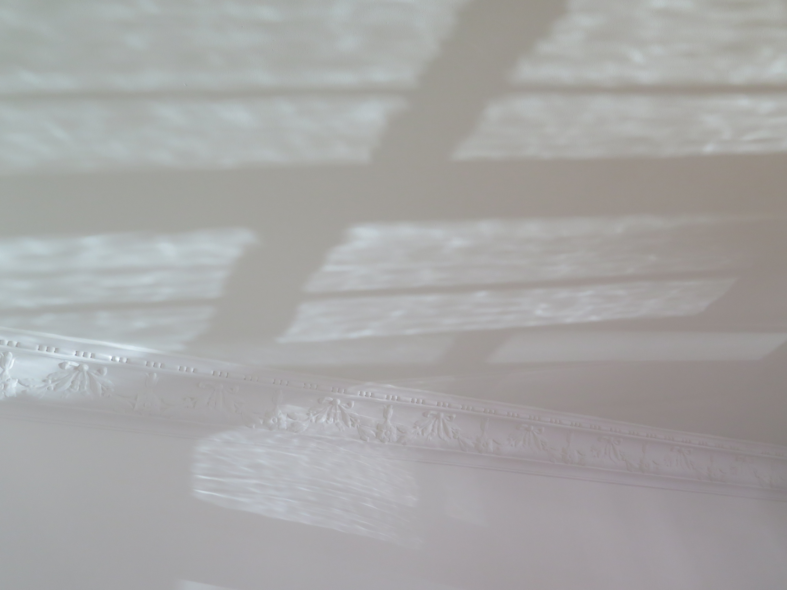
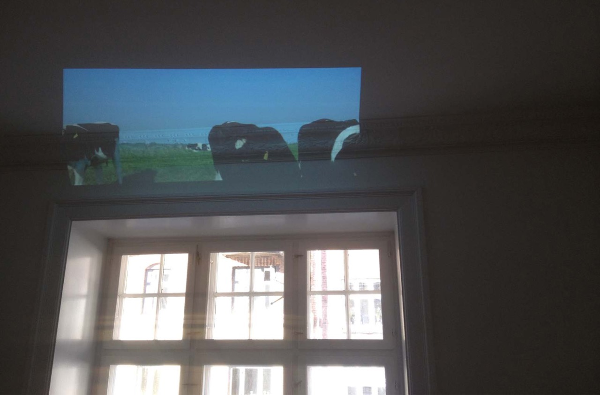
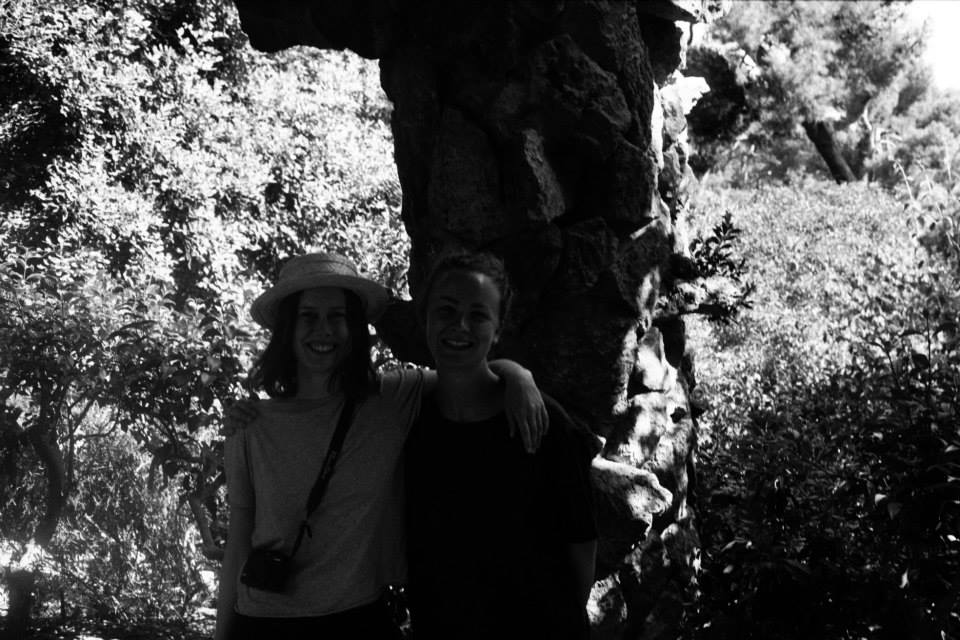
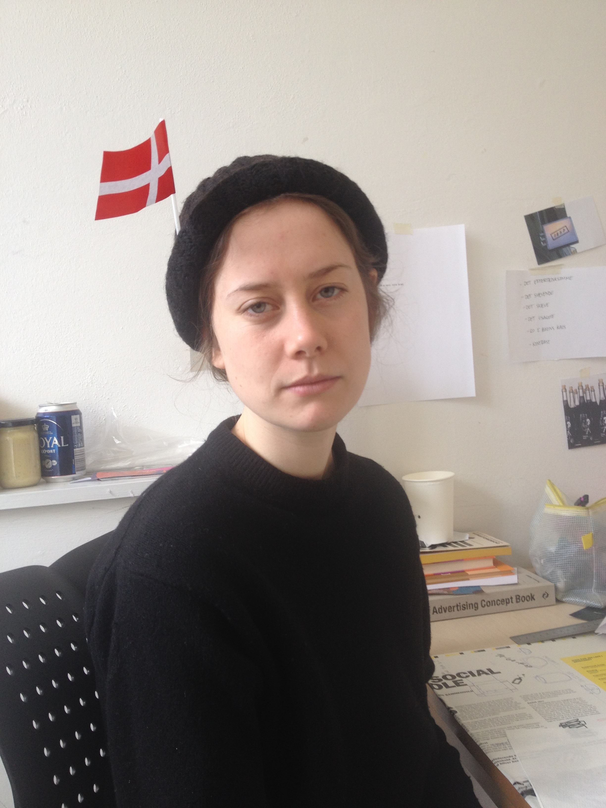
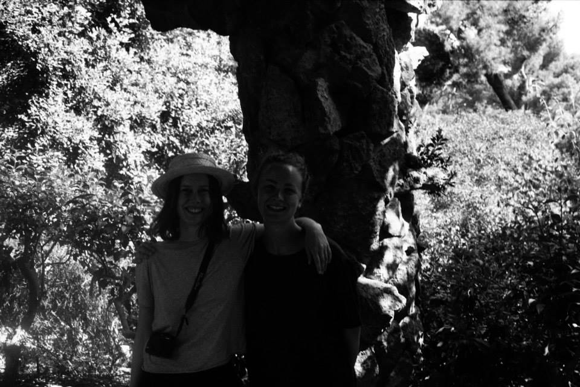
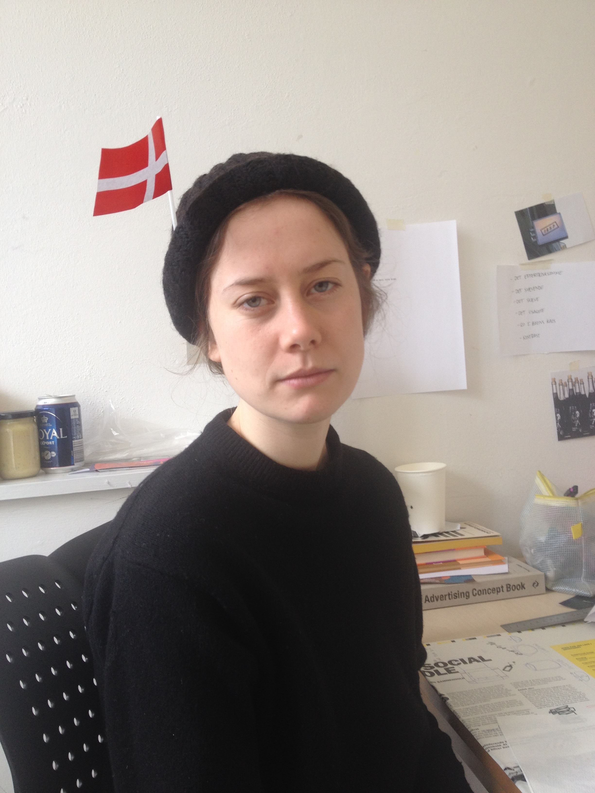

DK
We are the INTERMORPHS
by Ashkan Sepahvand
“We,” the collected sum of us, as a species supposedly known as “human,” are undoubtedly undergoing a systemic civilizational transition. Call it Apocalypse, call it Anthropocene, call it the Singularity—either way, the transition from disciplinary societies to societies of control to a futurism without a future is a historical process, accelerated violently to now-time, whereby the entirety of life, the living, indeed, Being itself, is implicated. The ontological spectrum has been blown to bits, fragments of the soul scattered into the radiant ether of the electromagnetic field, recollected as information. Today, planes crash or disappear off the radar, epidemic diseases are merely managed instead of cured, craters in Siberia open up, mud volcanoes unstoppably flow, genocidal wars are fought, occupations continue, barbarism abounds, the weather is strange indeed, club kids dance all weekend high on horse tranquillizers and happy pills, toxic fluids are shared body between body in the nighttime capitals of the Global South, yoga workshops in California offer Paleolithic snacks, and every Monday it is business-as-usual, back-to-work, as if the nineteenth century never ended. Work, capital, play. We house and secure ourselves in the structures of the past, while we move and act with practices from the future. This mass-participatory reality TV show, this holographic universe, a mere simulation, guest stars a modulated avatar named “Anthropos” and plays across multiple satellite streams and online channels, using prerecorded loops, circular feedbacks, and HD displays—the universe is watching, and laughing. Everywhere there is war, even in the happiest of gatherings in the la-la lands of the West, paradises of artificial bounty, markets for desired lack, where the dark side of the moon finds its mirror reflection turned topsy-turvy on its head, the glass shattered, the syncopated images uncanny. The distorted, crying faces of children in Sub-Saharan Africa, the perma-white smiles of a selfie taken in Orange County, all part of the same world-picture, all part of the Sameness Project: the young girl is the frat boy is the hipster is the faggot is the refugee is the (fill in the blank). We are the INTERMORPHS—forms in-between, a species undergoing transition, shapeless, soulless, prefabricated templates of autogenerated information, applications of self, user-friendly installations. We have all signed the “terms of use” agreement without ever having read the fine print. We find ourselves relocated to rigorously planned leisure communities, psychic spaces oscillating between dissociation, depression, and stimulation, where we voluntarily serve as indentured laborers in the imagination industry. We are hominid biocomputers undergoing reprogramming by the Corporation, awaiting the newest code upgrade, anticipating our future techno-somatic transformation into pure data, disembodied consciousness, an infinitesimal algorithm of variations on the same, a controlled hallucination convincing us that “you” and “I” are each different, unique, and special. Forget saving the planet, this is a war for the future of the species itself, a politics of the soul. The “noopolitical” era, as Maurizio Lazzarato has termed it, is our contemporary condition, a vigorous expansion of advanced capitalism’s territorial frontiers to the realms of the mind, memory, emotions, and to what we can nostalgically refer to as “human nature.” Control societies disperse power into the hands of the public, that collected sum of Intermorph profiles who manage, administer, and integrate audiovisual modulations, via remote technologies, into crystallized networks. “The entire wave of the soul, so to speak, is prolonged in infinite and indefinitely evolving undulations,” wrote Gabriel Tarde. Our bodies have been disciplined, check, our life has been organized, check, it only remains for our souls to be standardized, our brains streamlined, and our being to be reconstituted as virtual. We are the Intermorphs, and our Nietzschean evolutionary crisis is not that we are losing our humanity, but rather, that it was never there to begin with—that we have not yet become human.
SourceAU
  


